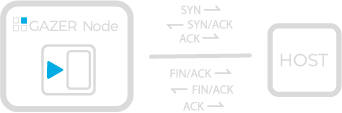
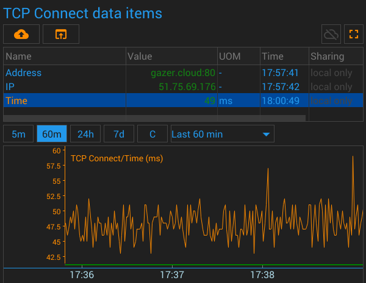
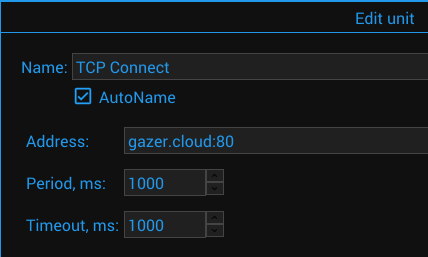

{#header.html#}
{%title=Gazer - Unit - TCP Connect%}
{%description=Gazer - Unit for determining the availability of network equipment over the network (TCP)%}
TCP Connect Unit
Description
The unit tries to connect to the specified address and writes the result to the data item.

Parameters
Timeout
Timeout in milliseconds to wait for each reply.
Period
The period between sensor activities
Data Items
Address
Address from the configuration.
Pictures
Screenshot

Configuration

{#bottom.html#}